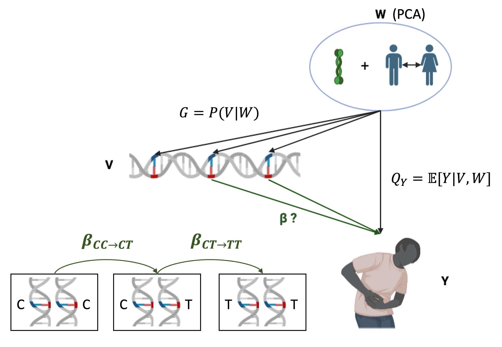

TarGene
What is TarGene?
TarGene is a reproducible and scalable Nexflow pipeline that estimates the effect of genetic variations on human traits via Targeted Learning.
TarGene Estimates the Effect of Change
Genetic effects are defined as causal quantities measuring the effect of change. The following picture illustrates two distinct genotype changes, $\mathrm{CC} \rightarrow \mathrm{CT}$ and $\mathrm{CT} \rightarrow \mathrm{TT}$, each corresponding to a different genetic effect. Note that there is no need for a parametric model to define the effect of such changes. A single variant effect is defined model independently by the Average Treatment Effect. For a single genotype change, it is for example given by
\[\beta_{\mathrm{CC} \rightarrow \mathrm{CT}} = \mathbb{E}[Y | do(CT)] - \mathbb{E}[Y | do(CC)]\]

The fact that genetic effects can be interpreted as causal effects is entirely dependent on the validity of the causal model, which rely on two critical assumptions
- No unobserved confounders. In TarGene, confounding variables are currently inferred via Principal Component Analysis. While PCA could partly capture genetic ancestry, the problem of linkage disequilibrium remains.
- Positivity. This means that the genetic variants under investigation should have non-zero probability under all confounding variables values. In TarGene, we tackle this issue via a heuristic, which is similar to the usual minor allele frequency threshold employed in GWAS.
How TarGene Works?
Targeted Learning is a modern framework that combines advances in causal inference, machine-learning and statistical theory to answer impactful scientific questions. In population genetics, these questions are diverse: single variant effect, epistatic interactions, gene-environment interactions and more! In TarGene, we thus provide targeted estimators that leverage machine-learning algorithms to answer these questions, while preserving valid statistical inference.
Briefly, TarGene uses machine-learning models to estimate two predictive functions:
- The outcome regression model: $Q_Y = \mathbb{E}[Y | V, W]$.
- The propensity score or variant model: $G = P(V | W)$.
The problem is that naively using machine-learning models to estimate $Q_Y$, will lead to biased estimates for our genetic effects like $\beta_{\mathrm{CC} \rightarrow \mathrm{CT}}$. The estimators we use in TarGene use the propensity score to reduce this bias and yield a targeted $\hat{\beta}^*_{\mathrm{CC} \rightarrow \mathrm{CT}}$. The resulting estimators are asymptotically normal, unbiased and efficient (with minimum variance). We can thus use flexible modelling strategies and still obtain valid confidence regions and p-values.
What TarGene Can Do
TarGene provides baked-in facilities for most popular study designs that aim at understanding the effect of genetic variations on human traits. Hopefully you can find what you are looking for in the following list of supported study-designs:
- Genome-Wide Association Studies
- Phenome-Wide Association Studies
- Focused Study of:
- Single or Joint variants effects
- Gene-Gene interactions up to any order
- Gene-Environment interactions up to any order
What TarGene Can't Do (Yet)
Targeted Learning is extremly powerful because it provides taylored estimation strategies for each question of interest. Most of the questions that can be currently answered with statistical confidence are population level questions. That is, while TarGene uses predictive machine-learning models to estimate genetic effects, these predictive models are not the output of the software themselves. Furthermore, because each estimator is targeted, it means additional work must be done for each new question that comes up. For instance, one thing that TarGene can't do just yet is to estimate Heritability, but if you are interested we'd love to hear from you!
Installation
If you are using TarGene on a High-Performance Computing platform, it is likely software dependencies are already available.
Since TarGene is a Nextflow pipeline, all you need is:
- Nextflow >= 24.04.4
For reproducibility, TarGene uses containerization technologies. You will also need one of:
- Singularity >= 3.8.6
- Docker >= 27.0.3
Versions are indicative, any recent version should work.
Basic Usage
TarGene can be run from the command line through Nextflow:
nextflow run https://github.com/TARGENE/targene-pipeline/ -r TARGENE_VERSION -c CONFIG_FILE -resumewhere:
TARGENE_VERSIONis the latest TarGene version, e.g.v0.11.0.CONFIG_FILEis a plain Nextflow configuration file describing what you want to do. Writing this configuration file is the hard work that this documentation is all about! However it needs not be scary, can could be as simple as:
params {
ESTIMANDS_CONFIG = "path to estimands config"
ESTIMATORS_CONFIG = "value or path to estimator config"
BED_FILES = "path to bed files"
...
}Citing TarGene
Labayle, O., Tetley-Campbell, K., Slaughter, J., Roskams-Hieter, B., Beentjes, S., Khamseh, A., & Ponting, C. TarGene [Computer software]. https://github.com/TARGENE/targene-pipeline
References
Dispensing with unnecessary assumptions in population genetics analysis. Olivier Labayle Pabet, Kelsey Tetley-Campbell, Mark J. van der Laan, Chris P. Ponting, Sjoerd Viktor Beentjes, Ava Khamseh. bioRxiv 2022.09.12.507656; doi: https://doi.org/10.1101/2022.09.12.507656
Getting in touch
Please feel free to raise an issue if you face a problem or would benefit from a new feature. Contributions are most welcome.